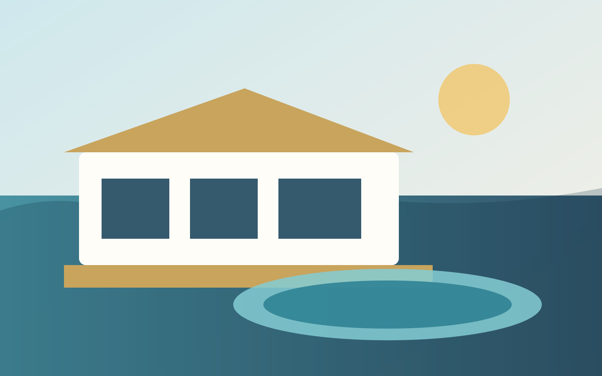
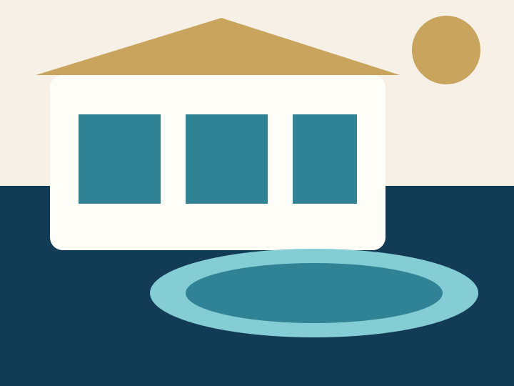
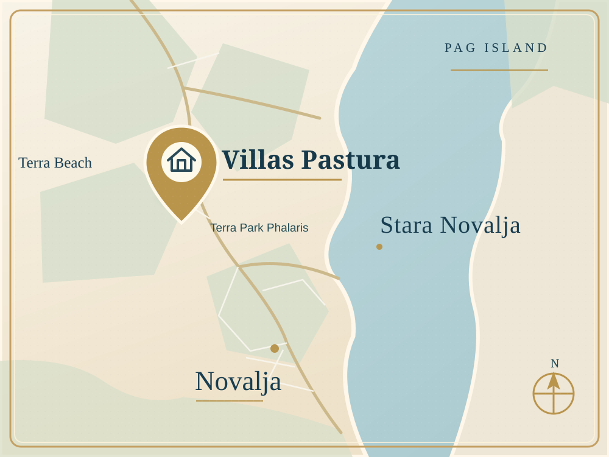

Private pool
Each villa has its own heated pool and fenced terrace; no outdoor facilities are shared.

Luxury private pool villa · Novalja, Pag Island
4 bedrooms · private pool · sea-view terrace · local supportStay in a modern 4-bedroom villa with a private pool, sea-view terrace, summer kitchen and direct booking support from a local Pag team.
The villa
Villas Pastura combine private outdoor living, generous bedrooms and simple direct-booking support. It is ideal for families, couples travelling together and small premium groups.
Each villa offers complete privacy, with its own entrance, fenced terrace and private heated pool. No outdoor facilities are shared.

Villa amenities
Each villa has its own heated pool and fenced terrace; no outdoor facilities are shared.
A private outdoor setting for slow breakfasts and evenings together.
A covered dining area with grill, fridge and lounge space.
Convenient parking is available directly at the property.
Charge your electric vehicle at the villa.
Your four-legged family members are welcome.
Why book direct
Priority support from a local hospitality team with more than 15 years of experience.
Guest reviews
9.9out of 10 · 4 verified reviews
Read all verified reviews“The villa is modern, spacious and spotlessly clean, with everything you need for a comfortable holiday.”
Location
The villa is positioned for privacy while keeping beaches, Novalja restaurants and day trips within easy reach.

Show on mapGood to know before booking
Practical answers from our local team about booking, comfort and island life.
In most cases, yes. On the official Villas Pastura website we aim to offer our best rates and extra benefits for direct guests. If you find a better offer for the same dates, number of guests and booking terms, please contact us and we will gladly review it.
The displayed total includes accommodation, tourist tax and final cleaning. There are no additional mandatory charges beyond the total shown at checkout. You can review the full price breakdown before confirming your booking.
Each villa offers complete privacy, with its own entrance, fenced terrace and private heated pool. No outdoor facilities are shared.
Yes. Each villa has four spacious double bedrooms, each with its own bathroom, and comfortably accommodates eight guests without temporary extra beds.
Both villas have private heated pools. Heating is especially useful in spring and September, when mornings and evenings are cooler. In the warmest summer weeks it is usually unnecessary, but it remains available on request at no extra charge. Outdoor water temperature also depends on the weather.
Not necessarily, but we recommend a car for exploring Pag comfortably. The villas are in a peaceful, private setting and the nearest beach is within walking distance. Restaurants, shops and most other attractions are easier to reach by car.
Plan your stay
A few useful starting points, chosen by our local team.
Distances and driving times are approximate and can vary with route, traffic and season.
See current availability, complete prices and the conditions of every available rate.
Check availability